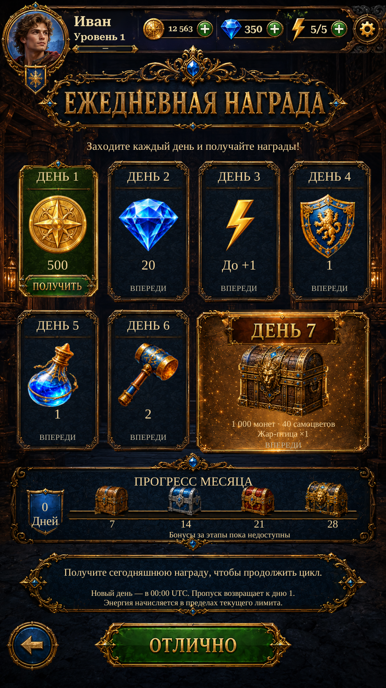

Daily Reward · reward hierarchy R3Daily Reward · reward hierarchy R3
Original Day 7 chest and red/gold title plaque, repaired bronze sparkle surface, four distinct source milestone chests, sapphire live-count badge and gold progress rail. Existing original claim/confirmation buttons and seven-day rewards retained.
These are actual Unity captures with isolated test saves. The implemented seven-day schedule and actual saved progress remain authoritative. Monthly milestone bonus payouts remain unavailable and are labelled accordingly.
